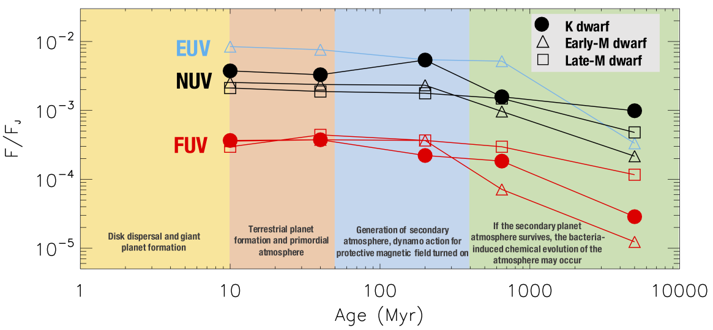
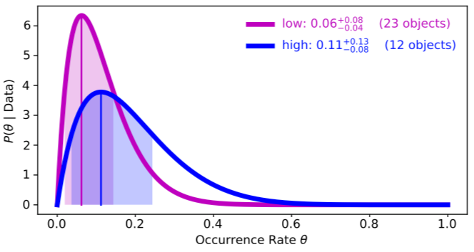
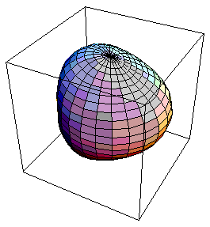

Habitable Zones and K Star Activity across Time (HAZKAT)
Team: Evgenya Shkolnik, Travis Barman, Victoria Meadows, Isabella Pagano, Sarah Peacock, R.O. Parke Loyd, Adam Schneider, and James Jackman
The HAZKAT program expands on the Habitable Zones and M-star Activity across Time (HAZMAT) program, which looks at the evolution of UV and X-ray radiation emitted by low-mass stars. We utilize both GALEX photometry and HST spectroscopy to determine the high-energy radiation as a function of age, rotation, and Rossy number.
While K stars have recently been deemed as the best candidate stars to host "super-habitable" planets, our work through HAZKAT has shown that this may not necessarily be the case. Comparatively, K stars experience similar levels of quiescent UV and X-ray flux as M stars and maintain saturated levels for longer than early M stars.
Papers:
HAZMAT. V. The Ultraviolet and X-Ray Evolution of K Stars (Richey-Yowell et al. 2019).
Two more in prep!
Brown Dwarfs: Are Radio Aurorae and O/IR Variability Connected?
Co-Is: Melodie Kao, Evgenya Shkolnik, Sebastian Pineda, Gregg Hallinan
Optical and infrared (O/IR) variability is pervasive throughout light curves of L dwarves as they reach the L/T transition. One hypothesis is that this variability is supplemented by localized magnetic heating due to aurorae. Using data from the VLA, we searched for radio emission in 17 photometrically variable L dwarfs from 4 – 8 GHz. We detected quiescent and highly circularly polarized flaring emission from only one source, inferring that auroral magnetic activity does not play a role in the O/IR variability observed on these targets. However, Hα emission may indeed be a tracer of magnetic activity.
Asteroseismic Targets for TESS
Advisor: Joshua Pepper
Pulsating stars are excellent laboratories for exploring the internal structure of stars. Using a decade's worth of data from the Kilodegree Extremely Little Telescope (KELT), we identified dozens of pulsating Delta Scuti, Gamma Doradus, and roAp stars that would make good candidates for TESS 2-min cadence observations in collaboration with the TESS Asteroseismic Working Group (TASC). The TASC has since published TESS results including some of these pulsators.
Papers:
Rotation and pulsation in Ap stars: first light results from TESS sectors 1 and 2 (Cunha et al. 2019).
The first view of δ Scuti and γ Doradus stars with the TESS mission (Antoci et al. 2019).
TESS Cycle 1 observations of roAp stars with 2-min cadence data (Holdsworth et al. 2021).